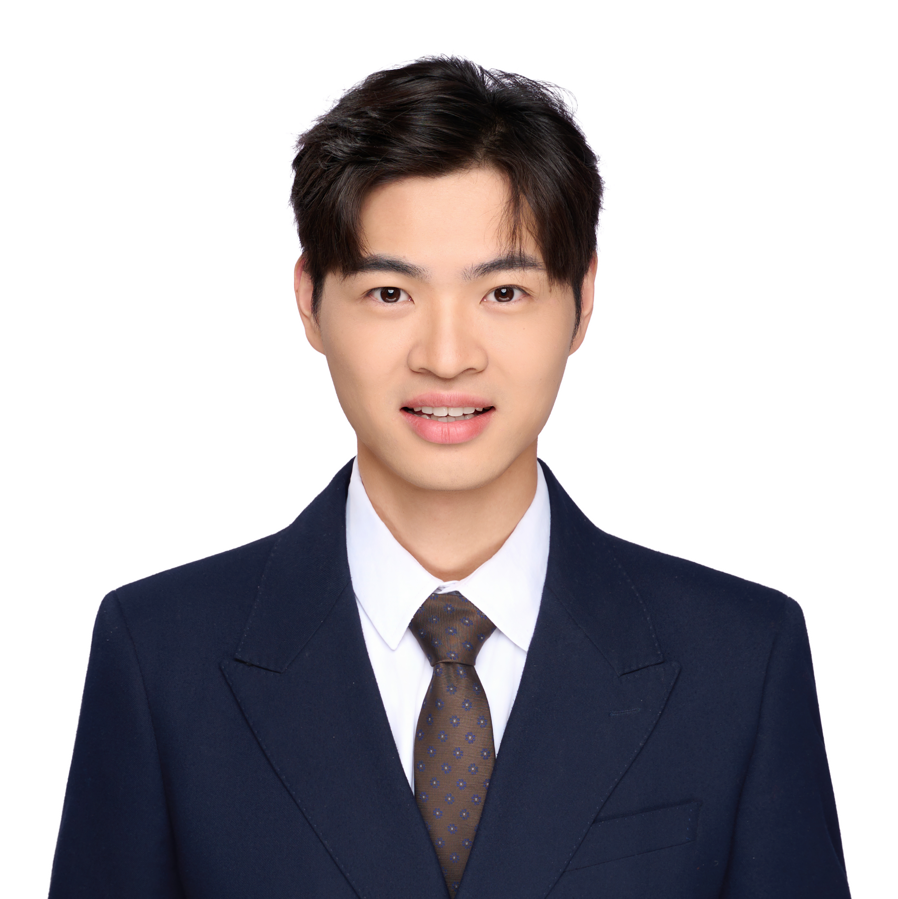

大模型算法工程师，专注于多模态与具身智能（VLM / Embodied AI）后训练对齐技术。在情感陪伴、心理健康、教育等垂域模型研发及实际落地中具备丰富实战经验。主导并打通基于 SFT、GRPO 强化学习与知识蒸馏的轻量化模型后训练管线，模型在 HuggingFace 与 ModelScope 累计下载量 2 万+。国内首批心理大模型核心探索与开发者之一（MindChat 2023 年开源，715+ stars），GitHub 开源项目累计收获 30,000+ stars。撰写并出版清华大学出版社专著《LangChain 大模型应用开发：从入门到实践》（2026）；Datawhale 成员、Qwen Ambassador、百度飞桨开发者技术专家（PPDE）。
国内领先的泛心理科技公司，主导集团大模型方向的整体研发与落地。